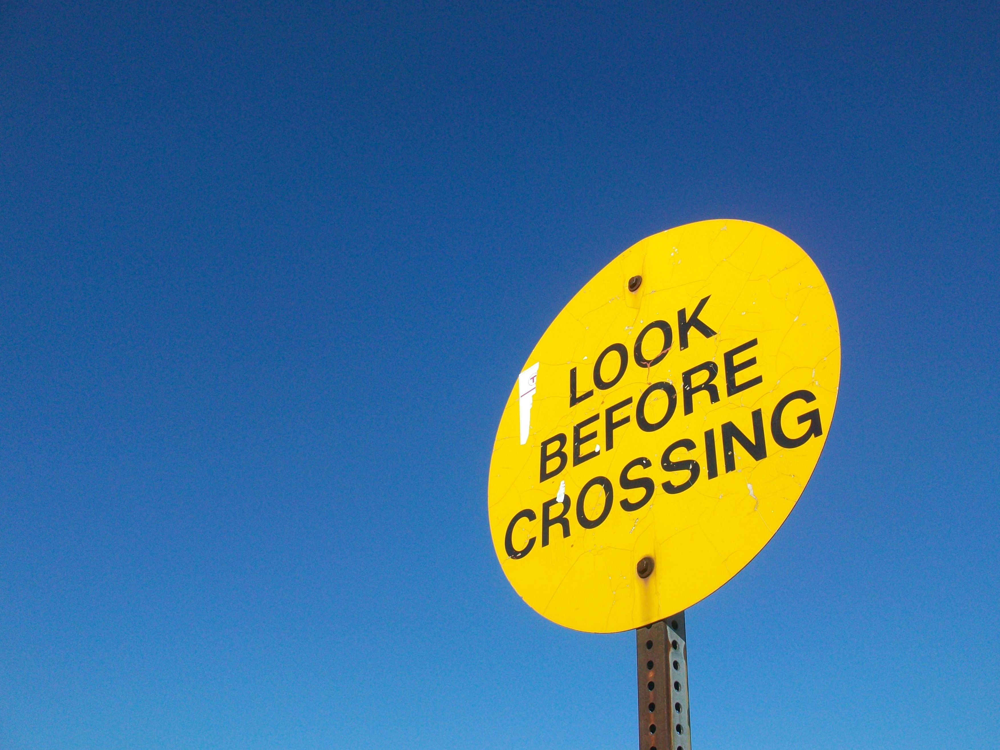

Armazenamento de valores reutilizáveis nos estilos.
04
Conhecendo o Sass
O Sass é uma extensão do CSS que adiciona recursos ao desenvolvimento de folhas de estilo.
Ele permite escrever CSS utilizando recursos que tornam a organização e manutenção dos estilos mais conveniente.
Organização de estilos
Mais recursos para escrever e manter CSS.
O Sass adiciona ferramentas que ajudam a estruturar melhor as folhas de estilo durante o desenvolvimento.
Entre os recursos associados ao Sass estão:
Organização de seletores de maneira hierárquica.
Recursos para reutilizar conjuntos de estilos.
Recursos para trabalhar com valores e operações.
Organização do código em diferentes arquivos.
Exemplo simples de variável
style.scss
$cor-principal: #3498db;
body {
background-color: $cor-principal;
}No CSS tradicional, não escreveríamos dessa maneira.
O Sass precisa ser processado/compilado para CSS antes de ser utilizado pelo navegador.
01
arquivo .scss
Você escreve os estilos utilizando Sass.
02
Sass
O código é processado e convertido.
03
arquivo .css
O navegador recebe CSS.
O navegador trabalha diretamente com CSS. O Sass funciona como uma ferramenta que nos ajuda durante o desenvolvimento.
05
Instalando o Sass
Como o Sass pode ser instalado através do npm, primeiro precisamos ter o Node.js instalado.
Com o Node funcionando, podemos instalar o pacote Sass.

Node.js → npm → Sass
O Sass faz parte do ecossistema de ferramentas JavaScript.
A instalação pelo npm conecta o Sass ao ambiente de desenvolvimento baseado em Node.js.
Instalação global
Um comando comum para instalar o Sass globalmente é:
Terminal
npm install -g sassO parâmetro -g significa global, ou seja, o pacote fica disponível para utilização globalmente no sistema.
Verificando a instalação
Depois da instalação, podemos verificar o Sass com:
Terminal
sass --versionSe a instalação estiver correta, o terminal exibirá a versão do Sass instalada.
06
Instalação local x global
Existe uma diferença importante entre instalar um pacote globalmente e instalá-lo dentro de um projeto.
Disponível no sistema
O pacote fica disponível globalmente.
Terminal
npm install -g sassDependência do projeto
O Sass é instalado como uma dependência de desenvolvimento daquele projeto.
Projeto
npm install --save-dev sass
Conceito importante
A instalação local permite que cada projeto mantenha suas próprias dependências e versões.
A instalação local é muito comum em projetos modernos porque permite que cada projeto mantenha suas próprias dependências e versões.